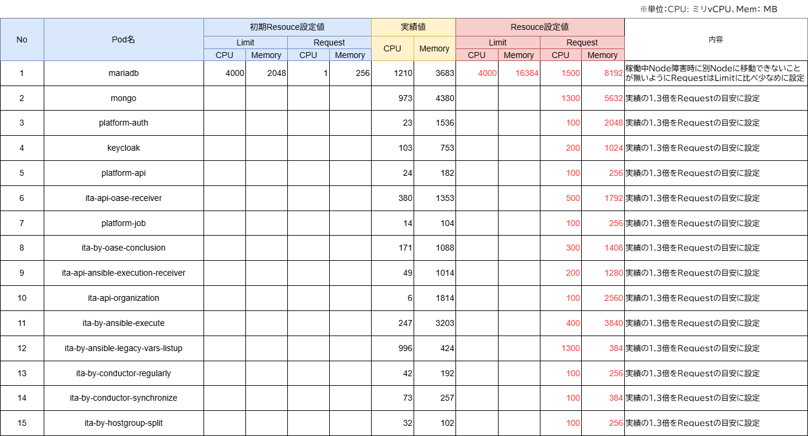
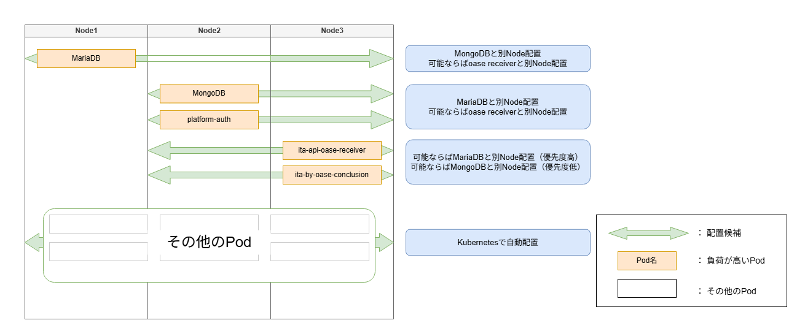
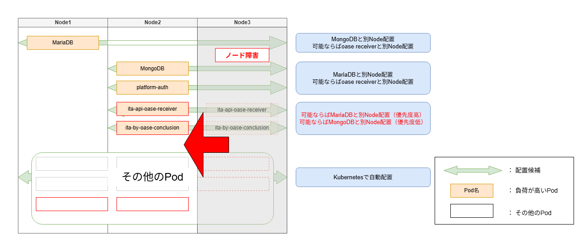

Affinity / Resource Request・Limit設定方法¶
概要¶
Kubernetes環境ではNodeの利用可能なメモリが不足すると、OOMKillやEvictionが発生し、サービス停止や処理遅延が発生する可能性があります。
本ドキュメントでは、ExastroITAの安定稼働およびNode障害時の可用性向上を目的として、
実際の利用状況からCPU・メモリ使用量を計測し、AffinityおよびResource Request/Limit を設定した事例について紹介します。
なお、本事例はOASEを中心とした運用環境であり、OASE処理に伴い処理負荷が高まるPodを中心にリソース設計を行っています。
前提¶
ITA バージョン: 2.8.0
Platform バージョン: 1.12.0
インストール環境: Kubernetes
対象環境: Kubernetes Cluster（Node1〜Node3）
シナリオ¶
実施した内容は以下のとおりです。
PodごとのCPU・メモリ使用実績を計測
実績値ベースで Resource Request/Limit 値を設定
指定したPodにAffinityルールを設定
CPU・メモリ使用量の取得¶
PodごとのResource Request/Limit値を設定するため、まずはKubernetes環境でのCPU・メモリ使用量を取得しました。
Kubernetes環境では標準でPodのリソース使用量を取得できないため、Metrics Serverを導入した上で、以下のコマンドを複数日にわたって実行し、各PodのCPU・メモリ使用量を収集しました。
kubectl top pod -n <namespace>
注釈
通常運用時など、「想定される処理負荷がかかっている」状態で取得してください。
Resource Request/Limit の設定方針¶
複数日分の実績値を取得し、OASE処理に伴い処理負荷が高いPodに対し、
CPUおよびメモリについてそれぞれ最大使用量を基準値として、実績値に余裕を持たせた値をRequestとして設定しました。本事例では実績の1.3倍としました。
なお、MariaDBのメモリのRequests値については、実績値に近い値を設定すると以下の問題が生じる可能性があります。
- スケジューリング時に、リソース余力の小さいNodeに配置されてしまう
- 配置後に他のPodがスケジュールされることでNodeのリソース余力が消費され、DB稼働中のメモリ使用量増加に対応できなくなる
そのため、MariaDBのメモリのRequests値は実績値の2倍程度を目安として設定し、他PodのスケジュールによるリソースNode余力の枯渇を防ぐようにし、
Limits値については、実績値から十分な余裕を持たせるため、CPUはデフォルト値を使用し、メモリは実績の4倍を目安に設定値としました。
{kind=link}

図 1 POD稼働実績値とResource Request/Limit設定について¶
また、RequestsとLimitsの設定内容はリソース量の確保だけでなく、KubernetesのQoS Classにも影響します。
Nodeのメモリが不足した際、QoS ClassによってEviction（退避）対象となる優先順位が決まるため、
重要なPodを安定して稼働させるために以下の方針でRequest/Limitを設定しました。
- ① Requests と Limits を同値で設定Guaranteed QoSとして扱われる。安定稼働を最優先する場合に選択する。
- ② Requests と Limits に異なる値を設定、またはRequests のみ設定Burstable QoSとして扱われる。最低限必要なリソースを保証しつつ、Nodeに空きがある場合は追加のリソースを利用できる。
- ③ 未設定BestEffort QoSとして扱い、Node のリソース不足時には優先的にEvictionの対象となる。
Nodeのメモリが不足した場合は、一般的に BestEffort → Burstable → Guaranteed の順でEviction対象となりやすくなります。
本事例ではOASE処理に伴い処理負荷の高いPod(上図の②で示したPod)に ② の設定を適用し、それ以外のPodはResource設定を行わない ③ のままとしています。
Resource設定例（一部抜粋)¶
上記の方針に基づき、Helmのvalues.yamlに、 resources.requests 、 resources.limits を設定しました。
# MariaDB — Requests・Limits 両方設定
mariadb:
resources:
requests:
memory: "8Gi"
cpu: "1500m"
limits:
memory: "16Gi"
cpu: "4000m"
# OASE 関連 Pod の例（Requestsのみ設定）
ita-api-oase-receiver:
resources:
requests:
memory: "1792Mi"
cpu: "500m"
ita-by-oase-conclusion:
resources:
requests:
memory: "1408Mi"
cpu: "300m"
Affinity の設定方針¶
CPU・メモリ使用量の計測結果から、MariaDB と MongoDB はともにメモリ消費量が多いことがわかりました。
そのため同一Nodeに配置するとメモリ枯渇リスクが高まるため、Affinityルールを設定して分散配置することとしました。
また、本事例ではOASEを活用した運用が中心となっているため、処理負荷の高いPodを単一Nodeに集中させず分散配置したいとの顧客要望もありました。
以上を踏まえ、MariaDB・MongoDB・platform-auth・ita-api-oase-receiver・ita-by-oase-conclusion をAffinityルールの対象とし、
下図のように各Nodeへ分散配置するよう設定しました。なお、その他のPodについてはKubernetesの標準スケジューリングによる自動配置としています。
{kind=link}

図 2 Node1〜3へのPod分散配置構成（通常稼働時）¶
この配置を実現するにあたり、各Podの要件に応じて以下の2種類のAffinityルールを使い分けました。
- requiredDuringSchedulingIgnoredDuringExecution必須条件。スケジューラーはルールを満たすNodeが存在しない場合、Podをスケジュールできません。
- preferredDuringSchedulingIgnoredDuringExecution推奨条件。スケジューラーはルールを満たすNodeへの配置を優先しますが、条件を満たすNodeが存在しない場合でもPodをスケジュールします。
本事例では、MongoDBについてはMariaDBとの同居を避けるため requiredDuringSchedulingIgnoredDuringExecution を使用し、
それ以外のPodについては可用性向上を目的として分散配置を優先しつつも、Node障害時やNode数が不足している場合でもPodが起動できるよう、
preferredDuringSchedulingIgnoredDuringExecutionを使用しています。
preferredDuringSchedulingIgnoredDuringExecutionを使用することで、Node3で障害が発生した場合でも、
Node3上のPod（ita-api-oase-receiver・ita-by-oase-conclusion）が残りのNodeへ再スケジュールされ、下図のようにサービスを継続できます。
{kind=link}

図 3 Node3障害発生時のPod再スケジュールイメージ¶
Affinity設定例¶
上記の方針に基づき、Helmのvalues.yamlに、
podAntiAffinity を設定しました。preferredDuringSchedulingIgnoredDuringExecution では weight に 1〜100 の値を指定でき、値が大きいほど優先度が高くなります。# MongoDB — MariaDBとの同居禁止（required）
mongo:
affinity:
podAntiAffinity:
requiredDuringSchedulingIgnoredDuringExecution:
- labelSelector:
matchExpressions:
- key: app.kubernetes.io/name
operator: In
values:
- mariadb
topologyKey: kubernetes.io/hostname
# MariaDB — OASE関連 Pod・MongoDB との分散（preferred）
mariadb:
affinity:
podAntiAffinity:
preferredDuringSchedulingIgnoredDuringExecution:
- weight: 60
podAffinityTerm:
labelSelector:
matchExpressions:
- key: app.kubernetes.io/name
operator: In
values:
- mongo
- platform-auth
- ita-api-oase-receiver
- ita-by-oase-conclusion
topologyKey: kubernetes.io/hostname
# platform-auth — MariaDB・ita-api-oase-receiver との分散（preferred）
platform-auth:
affinity:
podAntiAffinity:
preferredDuringSchedulingIgnoredDuringExecution:
- weight: 95
podAffinityTerm:
labelSelector:
matchExpressions:
- key: app.kubernetes.io/name
operator: In
values:
- mariadb
topologyKey: kubernetes.io/hostname
- weight: 90
podAffinityTerm:
labelSelector:
matchExpressions:
- key: app.kubernetes.io/name
operator: In
values:
- ita-api-oase-receiver
topologyKey: kubernetes.io/hostname
# ita-api-oase-receiver — MariaDB・MongoDB との分散（preferred）
ita-api-oase-receiver:
affinity:
podAntiAffinity:
preferredDuringSchedulingIgnoredDuringExecution:
- weight: 95
podAffinityTerm:
labelSelector:
matchExpressions:
- key: app.kubernetes.io/name
operator: In
values:
- mariadb
topologyKey: kubernetes.io/hostname
- weight: 90
podAffinityTerm:
labelSelector:
matchExpressions:
- key: app.kubernetes.io/name
operator: In
values:
- mongo
topologyKey: kubernetes.io/hostname
# ita-by-oase-conclusion — MariaDB・MongoDB との分散（preferred）
ita-by-oase-conclusion:
affinity:
podAntiAffinity:
preferredDuringSchedulingIgnoredDuringExecution:
- weight: 95
podAffinityTerm:
labelSelector:
matchExpressions:
- key: app.kubernetes.io/name
operator: In
values:
- mariadb
topologyKey: kubernetes.io/hostname
- weight: 70
podAffinityTerm:
labelSelector:
matchExpressions:
- key: app.kubernetes.io/name
operator: In
values:
- mongo
topologyKey: kubernetes.io/hostname
まとめ¶
本事例では、Helmのvalues.yamlにpodAntiAffinity・resources.requests・resources.limits を設定しました。
これにより、安定稼働の維持およびNode障害発生時の可用性向上が期待できます。
最適な設定値は利用状況やデータ量の変動によって変化するため、CPU・メモリの使用状況を定期的にモニタリングし、継続的に見直しを行うことが重要です。